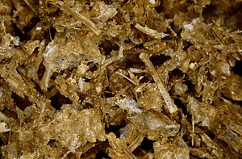

 Bone is usually identified by comparing it with reference collections of modern animal bone. This is a skilled specialist task, and often depends on close examination of some very small feature of the bone. While most such work has been conducted looking at the remains of mammals, archaeological fish remains can also have a great deal to tell us. One problem in looking at ancient fish bone is that it can be particularly difficult to identify. It is small, fragile, and is frequently found in very poor condition, with many of the most readily identifiable pieces missing, as can be seen from this group of material from the Bronze Age layers of a site at Ra's al-Hadd in Oman